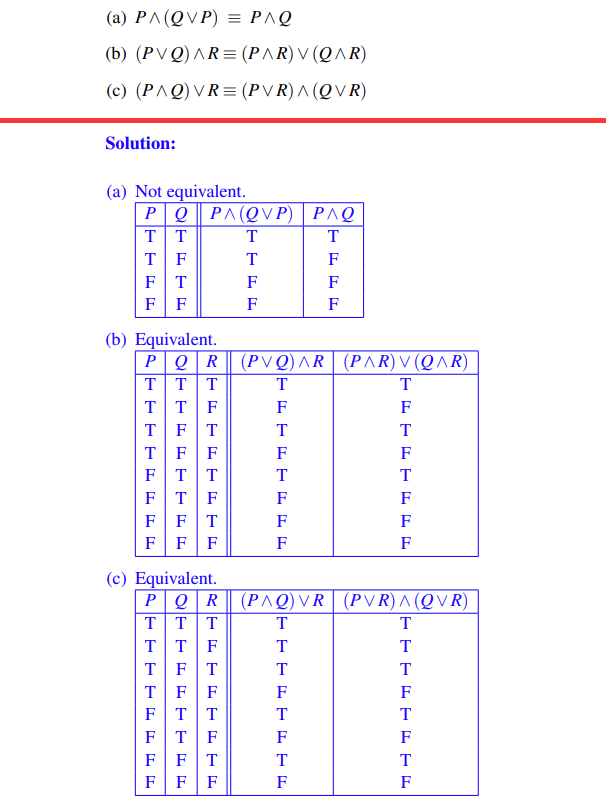

01 Propositional Logic
复习 PPT 补全笔记
I Introduce
I.1 truth tables
Determine whether the following equivalences hold, by writing out truth tables.
Here are some examples:  (we can also use Boolean algebra which is convenient)
I.2 base notations
Our first building block is the notion of a proposition, which is simply a statement which is either true or false.
For example

What we should know:
1. Conjunction: P∧Q (“P and Q”). True only when both P and Q are true.
2. Disjunction: P∨Q (“P or Q”). True when at least one of P and Q is true.
3. Negation: ¬P (“not P”). True when P is false.
4. Implication: P ⇒ Q (“P implies Q”). This is the same as “If P, then Q.”**
(Detailed reason omission)

- quantifiers: The universal quantifier ∀ (“for all”) and the existential quantifier ∃ (“there exists”).
We often write a proposition in the form of something like (∀x ∈ Z)(∃y ∈ Z)(x < y)
- when we think of two kinds of writing as equivalent, we say something like
- ¬(P∧Q) ≡ (¬P∨ ¬Q)
-
¬(P∨Q) ≡ (¬P∧ ¬Q) Of course, these two formulas should be remembered since they tell us how to negate conjunctions and disjunctions
-
about P→Q, the truth table is shown below:(
0stands for F while1stands for T)
| P | Q | P→Q |
|---|---|---|
| 0 | 0 | 1 |
| 0 | 1 | 1 |
| 1 | 0 | 0 |
| 1 | 1 | 1 |
8. about P↔Q, the truth table is shown below:(0 stands for F while 1 stands for T) |
| P | Q | P↔Q |
|---|---|---|
| 0 | 0 | 1 |
| 0 | 1 | 0 |
| 1 | 0 | 0 |
| 1 | 1 | 1 |
| ### I.3 priority of operations |
1. 括号 ()：无论在哪个领域，括号始终具有最高的优先级，用于改变默认的优先级顺序。 2. 非 ~ !：在逻辑运算中，否定（逻辑非、位非）通常具有较高的优先级。 3. 与 ∧：这包括逻辑与（AND）、位与（&）。在没有括号改变顺序的情况下，它们通常在否定之后立即评估。 4. 异或 ⊕：在某些情况下，需要考虑异或运算（XOR），它可能在与运算和或运算之间。 5. 或 ∨：这包括逻辑或（OR）、位或（|）。它们在逻辑与之后进行评估。 6. 条件 →：如蕴含（→）通常优先级较低。 7. 双条件↔：双条件（↔）通常具有最低的优先级
Must memorize formula
logical implication
II Practice
We need a lot of insight into propositions rather than just grasping concepts
For every real number k, there is a unique real solution to $x^{3}$ = k. (∀k ∈ R) (∃x ∈ R)(x 3 = k)∧(∀y,z ∈ R)(((y 3 = k)∧(z 3 = k)) ⇒ (y = z)) .